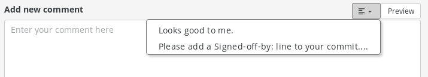

Quick replies¶
Quick replies are reusable pieces of text that you can use to start a comment on an issue or pull request. They are meant to remove the hassle of typing a similar response again and again.
Examples where this can be handy:
asking for a rebase of a pull request
asking a person to add a
Signed-off-byline to their commit
All these requests might be accompanied by a description on why it’s requested. With quick replies you can prepare the descriptions and the just use them with a click of a button.
Using quick replies¶
Any user that can comment will be able to use the quick reply. They are offered in a drop down menu next to the Preview button above comment form.
The button is only visible if the project has some quick replies defined.
Additionally, the button will become insensitive when you type something into the comment box or switch to preview. This should avoid writing over your carefully crafted comment by accident. If you remove the text from the field, the button will work again.
Creating and modifying quick replies¶
Project admins can create them in the settings section. There are no length limits on the reply, but only the first 50 characters will be displayed in the menu for users to choose from. This limitation should encourage you to put the most important message at the beginning.
The order in which you define the replies will be preserved on the chooser menu. This can be used to put the most frequently used ones on the top of the list.